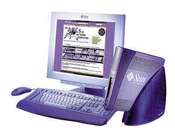
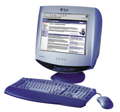
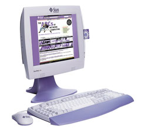
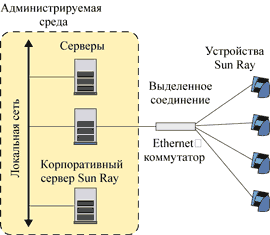
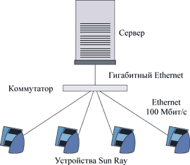

Александр Минаков
Вычислительные системы прошли в своем развитии многочисленные этапы, на которых доминировали и независимые централизованные, и распределенные многоуровневые системы. На каждом этапе преимущества доминирующей архитектуры определялись доступной аппаратной базой и уровнем развития ПО. Так, например, удешевление аппаратных средств сделало возможным создание относительно недорогих клиентских систем, что позволило разгрузить центральные серверы, переместив ряд задач на клиентские места.
Расцвет технологии клиент-сервер пришелся на начало 90-х годов. Однако по мере усложнения приложений требования к клиентским системам неуклонно росли, что, в свою очередь, приводило к необходимости постоянной модернизации и большим затратам на администрирование и поддержание клиентских мест. Кроме того, высокопроизводительные клиентские системы зачастую предъявляли такие же критерии к надежности аппаратных средств и сохранности данных, что и центральные серверы. А удовлетворение этих требований еще более увеличивало стоимость систем в целом и, естественно, усложняло системное администрирование.
Как известно, отдельная проблема в случае локальных клиентских систем - это обеспечение только санкционированного доступа к данным. Обычный пользователь может хранить важные данные на своей системе, и, чтобы обеспечить требования безопасности, он должен сам следить за предоставлением доступа к своим данным и за их защитой.
Феномен Интернета и появление во второй половине 90-х годов аппаратной базы с принципиально новыми показателями надежности и производительности позволили вернуться к централизованной модели вычислений на качественно ином уровне. Одним из решений стало перемещение вычислений и данных с клиентских систем на центральный сервер. Так называемая сетецентрическая модель вычислений привела к появлению нового типа клиентских мест - тонких клиентов (thin clients).
Клиенты "худеют"
Стремительный рост необходимого числа прикладных программ и приложений, постоянно возрастающие требования к мощности вычислительных ресурсов приводят к частой модернизации оборудования и периодической замене ряда компонентов. Это увеличивает как стоимость самого оборудования, так и дополнительные расходы на его поддержку. Совокупная стоимость владения компьютерной системой - TCO (Total Cost of Ownership) включает в себя затраты на приобретение оборудования и поддержание его в рабочем состоянии, обеспечивающем работу современных программных продуктов, а также финансовые потери, обусловленные сбоями в его работе. Одной из технологий, способной инициировать минимизацию общей стоимости владения, и стала в последнее время технология тонких клиентов.
Вообще говоря, эта технология базируется на трех основных составляющих: стопроцентном выполнении задач на сервере, многопользовательской операционной системе и методе распределенного отображения пользовательского интерфейса приложений. Обычно под тонким клиентом понимают устройство, не имеющее жестких дисков и флоппи-дисководов, чья вычислительная мощность и объем памяти определяются задачами пользователя. В сетях тонких клиентов все вычисления выполняются на сервере, что знаменует собой возврат к централизации; при этом, разумеется, резко снижаются требования к аппаратуре потребителя. Приложения и данные, хранящиеся на сервере, становятся доступными для пользователя при включении его устройства и проведении на сервере процедуры регистрации. Современные тонкие клиенты считаются закрытыми системами только в том смысле, что у них нет приводов для сменных носителей и разъемов расширения. Все необходимое оборудование подключается обычно через коммуникационные порты.
Архитектуры с тонкими клиентами позволяют сократить затраты двумя способами: во-первых, за счет уменьшения расходов на аппаратное обеспечение (например, при отказе от жестких дисков в клиентских машинах); во-вторых, за счет снижения затрат на администрирование сети на базе ПК. Стратегия с использованием тонких клиентов превращает рабочую станцию в современный эквивалент терминала, и потенциальных источников сбоя в сети становится меньше. Кроме того, возрастает среднее время безотказной работы MTBF (Mean Time Between Failure).
Часто говорят, что технология тонких клиентов служит продолжением идеологии мэйнфрейм - терминалы, вобрав в себя при этом последние достижения ИТ-индустрии и систем, построенных на открытых стандартах. Не секрет, что судьба "тонких" вычислений была предопределена появлением сетевой системы X Window. В то время ПК был еще непозволительной роскошью, а существенно более дешевый X-терминал позволял добиться более эффективного использования дорогостоящих больших машин за счет многопользовательского режима. Кроме того, росту популярности X-технологии способствовали и некоторые другие факторы. Так, X Window стала неотъемлемой частью UNIX, рейтинг популярности которой остается неизменно высоким. Кроме того, X Window достаточно эффективно использует полосу пропускания коммуникаций. Ну и, наконец, она универсальна и не связывает разработчика, предоставляя ему функции управления и графические примитивы виртуального многооконного устройства отображения, но изолируя от нюансов физической реализации.
Вскоре у X Window появились конкуренты - ICA (Independent Computing Architecture) и RDP (Remote Display Protocol). На сегодняшний день доминирование этих протоколов и, как следствие, поддерживающих их устройств и ПО, довольно очевидно.
Напомним, что при реализации ICA и RDP пользователь может обрабатывать на сервере огромные массивы данных, но обмен по каналам связи между клиентом и хостом будет определяться не объемом обрабатываемой информации, а экранным разрешением клиентской системы и интенсивностью управляющих действий пользователя (скорость ввода с клавиатуры, движения мышью и т. п.).
Решения Sun Microsystems
Корпорация Sun Microsystems (http://www.sun.com) широко известна своими инициативами в области корпоративных вычислений. Среди них стоит особо отметить архитектуру сетевых корпоративных клиентов, позволяющую организовать универсальный, дешевый и простой доступ клиентов к сети. Иными словами, Sun Microsystems предлагает свой вариант технологии тонких клиентов - Sun Ray.
Специалистам корпорации удалось устранить сразу два недостатка традиционных тонких клиентов - одновременно снизить ресурсоемкость клиентского ПО (соответственно, и стоимость аппаратно-программных реализаций) и добиться полной независимости от случайных или умышленных нарушений соединений клиент-хост.
О создании новой технологии ПО - Hot Desk было объявлено еще в 1999 г. Она делала функционирование вычислительных систем масштаба предприятия таким же простым и надежным, как пользование обычным телефоном. Новая модель вычислений упрощала и централизовала не только системную поддержку, но и администрирование. Приложения, информация и другие ресурсы поступают на клиентские места с сервера под управлением ОС Solaris, где и работает ПО Sun Ray. Технологии Sun Ray позволяют сосредоточить приложения и ресурсы на сервере в пределах единой операционной системы.
Все это позволяет применять модель вычислений, которую можно сравнить с использованием телефонного аппарата: пользователи абсолютно отстранены от всех проблем, возникающих в процессе работы (администрирование, обеспечение безопасности, переадресация), и общаются только с простым недорогим терминальным устройством, причем последнее всегда включено. Первым представителем этого нового класса устройств стал корпоративный терминал Sun Ray 1 (рис. 1).
|  | Рис. 1. Устройство Sun Ray 1.
|
Это простое в обращении устройство доступно по цене, надежно и начинает работать с момента подключения. По габаритам оно не больше книги. При использовании терминального устройства Sun Ray не нужно ничего менять в существующих программных приложениях, не требуется заменять ПО на более новую версию, и, что самое важное, - в отличие от ПК, Sun Ray не привязывает пользователя к закрепленному рабочему месту. Технология Hot Desk позволяет переадресовывать приложения пользователей по мере перемещения последних в пределах рабочей группы, а также дает возможность немедленного доступа к сессии пользователя с помощью смарт-карты. Такими мигрирующими приложениями могут быть в том числе и приложения на унаследованных мэйнфреймах и приложения Windows NT.
Мобильность, заложенная в основу устройства Sun Ray, предоставляет значительные преимущества. Так, если один из терминалов по каким-либо причинам нужно отключить, сотрудники могут легко подсоединить заменяющее его устройство или перейти к другому терминалу Sun Ray в пределах рабочей группы. В течение нескольких секунд они получают доступ к своей текущей сессии в том виде, в каком ее оставили, и могут продолжать работу практически без перерыва. Поскольку устройство не содержит компонентов, которые должен был бы обслуживать пользователь, поддержка системы довольно проста.
В отличие от ПК и Windows-терминалов, устройство Sun Ray не исполняет локально приложений, не имеет локальной операционной системы и, следовательно, не требует конфигурирования и администрирования. Большинство фирм - производителей современных тонких клиентов заявляют о достижении "нулевого уровня администрирования", однако это не всегда так. А вот устройство Sun Ray, по мнению разработчиков, действительно не нуждается в администрировании. Например, вместо того чтобы поддерживать сотни вариантов операционной системы - по одному для каждого клиента (что типично для среды тонких клиентов), администратор имеет дело с единственным образом операционной системы в среде Sun Ray. В итоге с появлением устройств Sun Ray удалось не просто перенести, но и вообще избавиться от всех сложностей, связанных с эксплуатацией, что значительно снизило общую стоимость владения и затраты на локальное администрирование (поглощавшее много времени и денег). Модель вычислений Hot Desk также позволяет ИТ-менеджерам использовать совокупные компьютерные ресурсы для оптимизации эффективности.
Сегодня семейство Sun Ray включает устройства Sun Ray 1, Sun Ray 100 и Sun Ray 150. Sun Ray 100 (рис. 2) - это высокоинтегрированный настольный терминал с 17-дюймовым ЭЛТ-дисплеем и поддержкой технологии Sun Ray Hot Desk. Он обеспечивает пользователям доступ к приложениям, для работы которых необходимы многофункциональные платформы, такие, как операционная среда Solaris, технология Java, другие UNIX-платформы, Microsoft NT 4.0 TSE и операционная среда мэйнфреймов.
|  | Рис. 2. Устройство Sun Ray 100.
|
Sun Ray 150 (рис. 3) - высокоинтегрированный настольный терминал с 15-дюймовым ЖК-дисплеем, портом RGB-проектора и поддержкой технологии Sun Ray Hot Desk. По характеристикам он близок к Sun Ray 100, но обладает большими возможностями.
|  | Рис. 3. Устройство Sun Ray 150.
|
К устройству Sun Ray 1 можно подключать мониторы производства компании Sun Microsystems, а также ряда других производителей. Оно обеспечивает доступ ко всем приложениям, исполняемым на платформе SPARC/Solaris, в том числе Java-приложениям, а также к приложениям платформы Microsoft Windows NT 4.0 TSE и многих других, включая мэйнфреймы. Все устройства оборудованы считывателями смарт-карт. Для работы устройств Sun Ray необходимо специальное ПО, которое функционирует на платформе SPARC/Solaris.
Технология Hot Desk
Технология Hot Desk реализует модель вычислений, в которой клиентские сессии исполняются на сервере и немедленно доступны каждому пользователю в любое время из любого места в пределах рабочей группы. Пользователи могут получить полный спектр услуг с помощью разделяемых ресурсов; технология обеспечивает функционирование действительно тонкого клиента, в то же время предоставляя на этом клиенте все возможности современной рабочей станции или мультимедийного ПК.
Главное отличие Hot Desk от архитектур, основанных на X/ICA/RDP-протоколах, заключается в большей сетецентричности. Все ресурсоемкие задачи, свойственные остальным тонким клиентам (неизбежное управление сложными структурами данных, представляющими окна, шрифты, графические примитивы), оставлены серверу-хосту. Клиент же выполняет лишь примитивные функции, как-то: управление буфером кадров (framebuffer), сканированием клавиатуры и перехватом прерываний от манипуляторов. Естественно, что ни о какой ресурсоемкости речь не идет. С подобными задачами с успехом может справиться практически любой процессор с достаточной тактовой частотой. Еще одно преимущество заключается в так называемой локализации модернизаций. Тонкие клиенты Hot Desk, в отличие от X-терминалов, не нуждаются в увеличении оперативной памяти при расширении круга стоящих перед пользователем задач (что, естественно, требует нового ПО).
Архитектурная идея Hot Desk довольно проста, причем X Window остается главным ее элементом. Но вместо локальных компьютеров или терминалов в случае Hot Desk ее выполнение ограничивается только хост-машиной. Терминалы Sun Ray не задействуют X-протокол. Дело в том, что модифицированный Sun X-сервер дополнен специальным ПО, отслеживающим изменения буфера кадра X, а существующий протокол предусматривает оповещение клиента об изменениях экранной области. Благодаря гибкости и сетецентрическому характеру X Window хорошо приспособлена к взаимодействию с самыми разными платформами.
Рабочая группа - основной элемент архитектуры Hot Desk (рис. 4). В нее входят хост-сервер приложений (его роль может выполнять любой SPARC-сервер под управлением ОС SunOS из модельного ряда Sun Microsystems), выделенная коммутируемая сеть с достаточной полосой пропускания и соответствующее количество терминалов Sun Ray 1. Опционально, если необходимо обеспечить доступ пользователей к приложениям других платформ, в состав рабочей группы могут входить, например, сервер Windows NT с многопользовательскими (терминальными) расширениями и RISC/CISC-компьютеры под управлением практически любых версий UNIX.
|  | Рис. 4. Архитектура Sun Ray Hot Desk.
|
Рабочая группа Hot Desk относительно независима, а построение систем высшего уровня обеспечивается как с помощью сетевой файловой системы NFS (Network File System), так и за счет расширенных сетевых сервисов, предоставляемых основным хост-компьютером или дополнительными машинами.
Определение требований к ключевым элементам архитектуры Hot Desk несколько усложняется очевидной зависимостью от характера используемых в рабочей группе приложений, но здесь существуют некоторые, можно сказать, фундаментальные рекомендации. Серверное ПО Hot Desk предусматривает запуск отдельного X-сервера для каждого подключенного клиента. Из опыта эксплуатации UNIX хорошо известно, что X-серверы - задачи достаточно ресурсоемкие, поэтому особенно экономить на объеме памяти хост-компьютера в Hot Desk не рекомендуется. Определить же достаточный объем памяти для выбранного сервера можно, справившись в документации.
Важнейший элемент архитектуры Hot Desk - выделенная локальная сеть. Терминалы Sun Ray из одной рабочей группы в принципе могут сосуществовать в одной сети с уже имеющимися ПК и рабочими станциями, но чтобы обеспечить системе Hot Desk высокую защищенность, нужна отдельная подсеть (со своей IP-адресацией). Задачи маршрутизации между подсетями выполняет хост-компьютер рабочей группы. Требования к пропускной способности сети не слишком высоки. Использование коммутаторов (рис. 5) вместо мультиплексоров-хабов также относится к рекомендованным решениям и позволяет существенно улучшить быстродействие системы в целом.
|  | Рис. 5. Схема подключения Sun Ray.
|
Стоит отметить, что технология Hot Desk обеспечивает и взаимодействие между различными приложениями. Например, пользователь может вырезать текст из документа Microsoft Word и вставить его в иное приложение клиентской операционной среды Sun Ray. Кроме этого, пользователи имеют доступ к приложениям, работающим под управлением Windows NT, Solaris, на мэйнфреймах, а также к находящимся в Сети приложениям, основанным на технологии Java. Пользователь получает доступ ко всем этим приложениям через единственное устройство Sun Ray, не нуждаясь во множестве рабочих станций, обеспечивающих доступ к огромному количеству приложений, работающих в различных системах.
Таким образом, в качестве преимуществ технологии Hot Desk можно назвать следующие.
- Немедленный доступ. Любые приложения, сетевые ресурсы или корпоративные приложения (включая видео и другие виды медиа) мгновенно появляются на устройстве.
- Администрирование и поддержка. Все устройства с нулевым администрированием поддерживаются централизованно, не нуждаются в дорогостоящем локальном администрировании.
- Мобильность. Сессии пользователей исполняются независимо от местоположения устройства; пользователи получают доступ к сессии с любого устройства в пределах рабочей группы.
- Производительность уровня сервера. Пользователи получают надежность, масштабируемость и доступность сервера Sun и операционной среды Solaris на настольной системе.
- Защищенность вложений в ПО. Существующие приложения для предприятия не нуждаются в доработке.
Безопасность
Производительность современных серверов и технология Hot Desk позволяют эффективно использовать разделяемые ресурсы сервера, обеспечивая при этом высокий уровень надежности и безопасности. Вместо того чтобы приобретать процессор, память, ОС для каждой настольной системы, как в случае персональных компьютеров или X-терминалов, Sun Ray позволяет иметь всего одну операционную систему, исполняемую на мощном масштабируемом сервере.
В такой архитектуре имеется один сетевой узел (сервер), а все станции Sun Ray 1 не принадлежат локальной сети и не имеют IP-адреса: они идентифицируются только сервером (см. рис. 5). Это уменьшает стоимость поддержки: сокращается не только число копий ОС, но и число сетевых узлов. Все приложения, необходимые пользователям настольных станций, хранятся и исполняются централизованно на одном или нескольких серверах, которые находятся под контролем системного администратора.
Благодаря тем возможностям, которые было бы слишком дорого реализовать на каждой настольной системе (централизованное создание резервных копий данных, зеркалирование дисков, дублирование аппаратных компонентов и создание кластеров), настольная система получает очень высокий уровень доступности и надежности. Кроме того, сама настольная система обладает высоким уровнем надежности благодаря отсутствию в ней механически подвижных компонентов. Даже если произойдет сбой, станцию Sun Ray легко заменить на другую, и при этом сохранится вся информация о состоянии рабочей области пользователя на момент сбоя. Как результат - не пострадают ни приложения, ни данные.
Особенности аппаратной реализации клиентской станции Sun Ray позволяют ограничить несанкционированное перемещение информации и установку пользователями программных средств. Невозможно и несанкционированное подключение устройств ввода-вывода к клиентской станции. Все ПО, в том числе драйверы, устанавливается на сервере системным администратором, который управляет правами доступа и может централизованно контролировать поток данных в сети.
Операционная система Solaris, управляющая работой настольных систем, не дает пользователям нарушить работу всей системы в целом, например, за счет занесения программ-вирусов, как это может произойти в случае использования персональных компьютеров. В традиционной системе, работающей под управлением ОС Solaris, внесение вируса может привести лишь к потере информации самого пользователя, занесшего вирус. В системе Sun Ray ограничена и возможность несанкционированной установки ПО пользователем: так достигается максимальный уровень безопасности.
Аутентификация
Как уже отмечалось, все устройства Sun Ray оснащены устройством считывания смарт-карт (размером со стандартную кредитную карту), позволяющих быстро и просто проводить аутентификацию пользователей. Впрочем, такая аутентификация необязательна; будучи дополнительным рубежом защиты системы от несанкционированного доступа, смарт-карты не включены в поставку продукта. Если необходима такая функциональность, смарт-карты приобретаются дополнительно.
Отдельно стоит сказать про использование идентификационных смарт-карт и программы управления доступом к Sun Ray. Процесс работы с ними реализован очень привлекательно. Если имеется карточка стандарта ISO-7816-1, то, вставив ее в терминал, можно получить на экране стандартный login, после чего зарегистрироваться обычным образом и начать работать. ПО на сервере связывает идентификатор этой карты с клиентской сессией до ее окончания. Если во время работы вытащить карту, терминал тут же заблокируется до тех пор, пока в него не будет установлена карта с идентификатором, принадлежащим какой-либо сессии - той же самой или другого пользователя. На деле это означает, что можно перейти со своей картой к любому другому терминалу Sun Ray, установить в него свою карту и продолжить работу в своей сессии именно с того момента, с которого ее прервали, вытащив карту. Кроме того, используя ПО управления доступом, входящее в стандартный комплект поставки, можно связывать доступ конкретных пользователей с конкретными идентификаторами и рабочими местами.
Требования к серверу
Важнейший элемент терминальной системы Sun Ray Hot Desk - это сервер; соответственно большую роль играет правильный выбор его характеристик. Sun Microsystems дает рекомендации по конфигурированию серверов в расчете на обеспечение производительности клиента Sun Ray на уровне рабочей станции при нормальных рабочих условиях, допускающих задержки не более 100 мс. В качестве сервера для Sun Ray могут использоваться компьютеры на базе процессоров SPARC любого масштаба - в зависимости от количества подключаемых клиентов. Серверы должны иметь по крайней мере две сетевые интерфейсные карты, 256 Мбайт оперативной памяти и достаточное пространство для свопинга. Сетевая интерфейсная карта, используемая для соединения с клиентом Sun Ray, должна иметь достаточную пропускную способность (от 100 Мбит/с до 1 Гбит/c). Однопроцессорные серверы рекомендуется использовать только для очень небольших рабочих групп, от 5 до 10 активных пользователей.
Программное обеспечение
ПО для сервера Sun Ray предназначено для администрирования и поддержки настольных систем Sun Ray 1. Менеджер аутентификации (Authentication Manager) проводит аутентификацию пользователей. Как только пользователь успешно аутентифицирован, система посылает сообщение о новом соединении менеджеру сессии (Session Manager). Точно так же посылается извещение об окончании работ, когда это происходит. Менеджер сессии (Session Manager) отображает сессию пользователя на терминал Sun Ray и отвечает за подключение соответствующих сервисов к каждому конкретному терминалу и их отключение. Хотя пользователь может иметь несколько сессий, в каждый данный момент времени активна только одна. Пользователь может переключаться между этими сессиями, создавать новые сессии и уничтожать существующие.
Вся информация на корпоративный терминал Sun Ray выводится при помощи драйверов виртуальных устройств, которые помещаются на сервере. Эти драйверы отображают результат развертки изображения в сессиях высокого уровня API, таких как X11, в протокол терминального устройства. Для каждого из поддерживаемых API требуется свой драйвер виртуального устройства.
Для пользователей корпоративных терминалов Sun Ray существует два способа общения с периферийными устройствами. Во-первых, они могут получить доступ к периферийному устройству, подключенному непосредственно к сети, причем этот доступ обеспечивается исключительно через серверы (подобно тому, как это делает любой пользователь ОС Solaris). Во-вторых, они могут иметь локальные периферийные устройства, подсоединенные непосредственно к терминалу Sun Ray через порт USB. Драйверы таких устройств также находятся на серверах.
С ПО для терминальных устройств Sun Ray может работать SPARC-сервер любого масштаба, использующий ОС Solaris. ПО Sun Ray отвечает за администрирование и поддержку системы, включая аутентификацию пользователей и перенаправление входящих и исходящих запросов к терминалу Sun Ray. ПО для администрирования включает в себя приложения для выбора политики аутентификации, изменения привилегий пользователей, установки параметров корпоративного терминала и мониторинга состояния.
Приложения
Система Sun Ray предоставляет пользователю доступ ко всем приложениям, исполняемым под управлением ОС Solaris 2.6, Solaris 7, Solaris 8, в частности, к Java-приложениям. Для работы с большинством документов Microsoft Office в рамках ОС Solaris достаточно установить на сервере SPARC/Solaris программное обеспечение Star Office.
Многие компании активно используют в своей работе иные Windows-приложения. Система Sun Ray способна обеспечить доступ к Windows-приложениям, исполняемым непосредственно на сервере Windows NT TSE 4.0. Для этого на сервере Windows NT TSE 4.0 должно быть установлено ПО Citrix MetaFrame, а на сервере SPARC/Solaris, поддерживающем работу настольных систем Sun Ray, - Citrix ICA. Такой подход позволяет работать с Windows-приложениями, сохраняя уровень производительности, обеспечиваемый сервером Windows NT.
Sun Ray и другие
Системы Sun Ray часто сравнивают с X-терминалами и Windows-терминалами, поэтому важно понимать, в чем различие между ними. В архитектуре Sun Ray Hot Desk операционная среда исполняется на сервере, а терминальному клиенту не требуются локальные ресурсы и администрирование. Формирование изображения происходит на сервере, а на терминал передается уже готовое изображение. Каждый пользователь имеет собственный выделенный канал для взаимодействия с сервером, что обеспечивает высокую производительность передачи данных. Таким образом, в рассматриваемой архитектуре производительность зависит исключительно от ресурсов сервера. Для корпоративных клиентов важна низкая стоимость решения без ущерба функциональным возможностям (например, при работе с мультимедиа).
В решениях на базе Х-терминалов сохраняется потребность в локальных ресурсах и администрировании. ОС Х-терминала исполняется на настольной системе, а изображение формируется непосредственно в устройстве в соответствии с потоком команд, посылаемых приложением на X-терминал по протоколу X Windows (достаточно "тяжелому"). Традиционно пользователи Х-терминалов разделяют общий канал, соединяющий клиентов с сервером. Каждая настольная система - это сетевой узел со всей атрибутикой (IP-адрес и т. д.). Производительность в таком решении существенно зависит от локальных ресурсов устройства (процессор, память) и качества сервиса в сети.
Как уже отмечалось, подавляющее количество тонких клиентов представляют собой Windows-терминалы со встроенной поддержкой протоколов ICA и RDP. Производители предлагают такие устройства с самых различных конфигурациях, обеспечивающих ту или иную функциональность. Некоторые терминалы не имеют почти никакого аппаратного обеспечения, тогда как другие оснащаются портами USB, стереофоническими аудио- и видеовозможностями, а также оперативной памятью до 32 Мбайт. Кроме того, устройства различаются по внешнему виду, эмулируемым терминалам (например, VT100, 3270) и т. п. Они имеют встроенную операционную систему, занимающую несколько мегабайт флэш-памяти. Обычно это Windows CE, хотя некоторые производители используют свои собственные специальные ОС (совместимые тем не менее с RDP и ICA), другие же предлагают модели на базе Linux. Большинство Windows-терминалов поддерживают разрешающую способность экрана на уровне 1024х768 или 1280х1024 при частоте вертикальной развертки 75 или 85 Гц. В качестве сетевого соединения обычно используется 10Base-T, но чаще 10/100Base-T. Что же касается процессора, то здесь упор делается на обычную продукцию корпораций Intel (Pentium II/III), AMD (K6-2) и National Semiconductor (Cyrix MediaGX), но, как показывает практика, в подавляющем числе устройств используются все же кристаллы National Semiconductor.
Windows-терминалы, как и Х-устройства, нуждаются в локальной ОС, в качестве которой обычно выступает Microsoft Windows CE или встроенная ОС. Естественно, для них требуется локальная память, шрифты, драйверы, и производительность терминала при этом очень сильно зависит от локальных ресурсов и конфигурации. Терминалам Sun Ray, напротив, не требуются собственные ресурсы, что обуславливает высокую производительность и легкость администрирования.
Таким образом, к основным преимуществам терминальных устройств Sun Ray можно отнести следующие:
- нулевые расходы на администрирование (все администрирование, включая модернизацию программных продуктов, происходит на сервере);
- отсутствие потребности в модернизации (сам терминал Sun Ray не нуждается в замене; модернизация может происходить только на сервере и немедленно становится доступна каждому устройству рабочей группы);
- оперативность подключения (терминал легко подключается и автоматически конфигурируется); ·
- мобильность (пользователи имеют немедленный доступ к своим сессиям с любого устройства в пределах рабочей группы, получая сессию в том же состоянии, в каком ее оставили);
- доступность приложений (через корпоративный терминал доступны все приложения предприятия).
Перспективные рынки и применение
Хорошая перспектива для устройств Sun Ray существует на уровне рабочих групп, где требуется доступ к приложениям, размещенным в различных операционных системах. Стоит отметить, что Sun Ray - это прежде всего решение для локальных сетей. Системы Sun Ray могут использоваться в пределах одного или нескольких близко расположенных зданий.
В числе основных рынков и сфер приложения можно назвать:
- системы для работы с клиентами (прием звонков, горячие линии и предпродажное обслуживание);
- образование (университеты, студенческие городки, библиотеки, администрация);
- государственные учреждения (cистемы контроля и управления, рабочие места служащих);
- финансы (внутренние службы, администрация, трейдинг);
- системы управления ресурсами предприятия.
В заключение хотелось бы отметить, что "тонкие" вычисления продолжают оставаться довольно перспективным направлением, в некоторых случаях подсказывающим проектировщику информационной системы единственно оптимальное решение. Используя технологию Sun Ray, можно построить корпоративную клиентскую среду, обеспечив пользователей доступом к любым необходимым для бизнеса приложениям, и сэкономить средства не только при покупке самой системы, но и в процессе ее эксплуатации.